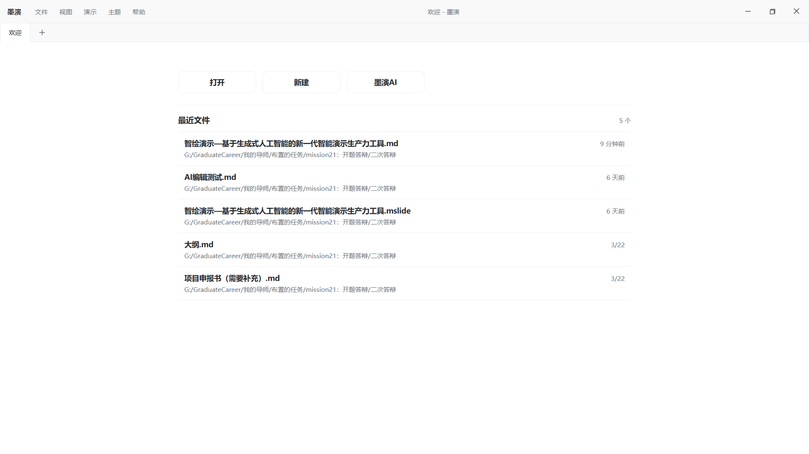
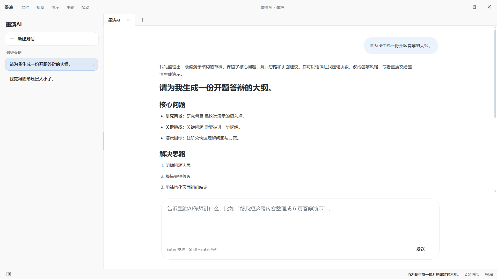

传统：手工排版主导
- 内容整理与结构梳理主要依赖人工
- 页面排版与反复修改主要依赖人工
- 演示生产整体由人工主导完成
AI 时代：意图驱动协同
- 人的重点转向意图表达与结果把控
- AI 参与内容生成、编辑优化与风格生成
- 演示任务转向结构化表达与 AI 协同
2026.04.03
演示任务正由手工排版主导，逐步转向以结构化表达和 AI 协同为核心的新型工作方式。
- 内容整理与结构梳理主要依赖人工
- 页面排版与反复修改主要依赖人工
- 演示生产整体由人工主导完成
- 人的重点转向意图表达与结果把控
- AI 参与内容生成、编辑优化与风格生成
- 演示任务转向结构化表达与 AI 协同
前者强调人工主导的页面编辑，后者强调单次结果生成。
- 已形成较成熟的人工主导方式
- 核心逻辑仍围绕页面编辑展开
- 内容梳理与排版仍需大量精力
- 能够快速给出一版结果
- 核心优势更多体现在单次出稿
- 难撑修改、控风格与任务衔接
共同局限：都难以同时满足结构化表达、AI 持续协同和完整闭环的需求。
用户痛点集中在内容底稿、制作成本与持续协同三方面。
演示内容缺乏统一承载方式，难以沉淀为可持续修改与加工的结构化底稿。
由于缺少稳定底稿，传统制作往往依赖人工排版与反复调整，表达和制作成本都偏高。
现有 AI 结果多停留在单次出稿，难以在统一底稿上持续修改、继续加工并接入完整流程。
项目既不沿用传统工具的人工排版路径，也不采用单次生成即结束的出稿路径，而是以结构化底稿为核心，构建 AI 持续协同、结果可持续加工的一站式演示工作流。
马克演示围绕完整演示任务构建 AI 原生工作平台，其总体方案由结构化内容底座、AI 持续协同和一站式闭环共同构成。
以统一内容中间层承接演示表达，使主题、层级、要点与逻辑关系能够被持续组织和加工。
让 AI 参与草稿生成、编辑优化与风格生成，使内容在统一工作流中不断完善。
通过预览、演示和导出打通成果输出环节，让完整演示任务在同一平台内连续完成。
核心升级不是“传统流程 + AI 入口”，而是“结构化表达驱动的完整演示工作流”。
相较于传统工具将内容分散在页面中、生成工具将内容固化为单次结果，项目以统一底稿承载演示表达，使内容能够持续修改、协同优化并稳定进入后续呈现流程。
- 内容要么依附页面，要么固化为单次结果
- 标题、层级与逻辑关系缺少统一承载
- 难以持续修改、协同优化与后续加工
- 以 Markdown 沉淀统一、清晰的内容底稿
- 集中承载标题、要点与逻辑关系
- 支持持续修改、AI 协同与后续呈现
核心价值：Markdown 不是一版结果，而是可持续加工、可接入 AI 协同与页面呈现的统一内容底稿。
AI 不再沿用“单次出稿即结束”的参与方式，而是围绕统一内容底稿，在草稿生成、内容修改与优化过程中持续协同。
- 核心价值集中在快速给出一版结果
- 生成后难围绕同一内容继续修改与加工
- AI 辅助往往停留在出稿阶段
- 在草稿阶段形成内容框架
- 在编辑与页面元素层面持续润色和局部优化
- AI 可围绕统一底稿持续协同
核心价值：AI 不是一次出稿即结束，而是围绕统一底稿持续参与内容形成、修改与优化的协同机制。
在结构化内容底座与 AI 持续协同机制的支撑下，系统打通了从内容形成到成果输出的全过程。
围绕统一底稿完成草稿生成、内容编辑与持续优化。
即时查看页面呈现效果，持续校准表达与展示方式。
在同一系统中完成正式演示组织与现场流程控制。
在平台内完成导出交付，使演示结果可直接进入后续使用。
核心价值：不是沿用传统工具的页面编辑式全流程，而是围绕统一底稿与 AI 持续协同，形成内容表达驱动的一站式演示工作链路。
本项目的重要创新，在于相较于页面分散承载和单次结果固化的方式，以标准 Markdown 构建统一的结构化内容底座。
先将演示核心信息沉淀为统一底稿，使标题、层级、要点与逻辑关系有稳定承载。
使演示制作由人工排版和结果固化，转向结构化表达驱动的内容组织方式。
既便于人持续修改，也便于 AI 理解、生成与优化，为后续呈现提供稳定基础。
创新价值：Markdown 在本项目中不是内容录入形式，而是统一承载演示逻辑、支撑 AI 协同与页面呈现的结构化内容底座。
本项目的重要创新，在于相较于“单次出稿即结束”的路径，将 AI 扩展为贯穿演示任务全过程的持续协同机制。
AI 不再停留在“一次生成一版结果”，而是成为演示任务中的持续参与者。
AI 贯穿草稿生成、编辑优化、风格生成与局部元素优化等多个环节。
用户可围绕统一底稿持续判断、调整与优化，AI 不再只是出稿者，而是可被持续调动的协同参与者。
创新价值：AI 不再只负责生成结果，而是以持续协同方式深度参与内容形成与完善过程，体现出 AI 原生演示工作流的协同特征。
平台形态的创新，不在于延续人工排版主导的传统路径，也不止于单次出稿，而在于将结构化表达、AI 持续协同与预览演示导出统一组织到同一系统。
以统一底稿承载演示逻辑，使内容形成、修改与呈现在同一基础上展开。
AI 贯穿草稿生成、编辑优化、风格生成与局部优化，成为持续参与者。
将预览、演示控制与成果导出纳入同一系统，使完整演示任务能够连续完成。
创新价值：项目形成的不是局部功能工具，而是面向完整演示任务的 AI 原生一站式平台形态。
项目面向“人工智能+”、教育数字化和智能原生应用的发展趋势，推动生成式人工智能从单次结果生成走向真实演示工作流，探索 AI 时代内容生产与表达方式的重构。
帮助用户提升结构化表达、数字素养与成果展示能力，更好支撑课程汇报、学术答辩和教学展示等场景。
减少重复排版和多工具切换成本，提升方案汇报、项目申报和成果展示的处理效率与表达质量。
推动生成式人工智能从单点功能走向完整工作流，促进 AI 在真实任务中的规范化、常态化和低门槛应用。
项目的价值不只在于提升 PPT 制作效率，更在于为 AI 时代演示任务提供一种可落地、可推广、可持续演进的新型工作方式。
随着“人工智能+”持续深化、教育数字化不断推进以及智能原生应用逐步成熟，演示内容生产正由人工排版和过程控制主导的方式，转向 AI 协同驱动的新型工作方式。
“人工智能+”、教育数字化和智能原生应用持续推进，为 AI 原生演示平台的发展提供现实基础。
演示内容生产正由人工排版和过程控制主导的方式转向 AI 协同驱动，真实任务场景也需要更完整的工作流形态。
项目有望形成更广泛的应用空间，并随着能力和工作流完善，逐步发展为更成熟的 AI 原生平台，持续释放落地价值。
发展前景：随着产品能力、协同机制和工作流持续完善，项目有望逐步发展为更成熟的 AI 原生演示平台。
项目并未停留在概念层面，而是已形成可运行、可演示的系统原型，具备明确的产品形态与现实落地基础。
- 结构化编辑、实时预览、演示控制等核心功能已实现
- 已支撑从内容形成到页面呈现、演示展示的基础工作流
- AI 原型设计与关键交互验证已完成
- 已覆盖内容生成、辅助编辑与样式生成等核心流程
当前阶段已形成“主体系统可用、AI 原型成型”的阶段性成果基础。

欢迎页作为系统统一入口，支持文稿打开、新建与 AI 生成等核心起始操作，帮助用户快速进入演示内容准备流程。


系统已形成“AI 生成初稿—AI 辅助编辑”的连续能力链路，用户可在同一界面完成从主题生成到草稿成型、再到表达优化的衔接操作，并围绕统一内容持续补充与润色，提升内容准备效率和一致性。

系统已支持在预览阶段围绕选定页面元素发起 AI 优化，使内容完善与页面呈现在同一工作流中持续推进。

演示环节已支持讲者视图与观众视图协同展示，讲者可在现场进行翻页与流程控制，并结合激光笔、计时器等辅助功能完成节奏把控；观众端同步呈现核心内容，提升答辩与汇报场景下的可控性和完成度。
在现有系统原型基础上，项目后续将继续围绕产品能力完善持续演进，推动马克演示由可用原型走向更加成熟、更加通用的 AI 原生演示工作平台。
进一步提升内容生成质量、编辑优化水平和多场景适配能力，更好支撑不同任务下的表达需求。
持续优化编辑体验和交互方式，降低使用门槛，帮助用户更平滑地迁移到 AI 原生工作方式。
随着 AI 能力持续接入和完善，增强协同过程的稳定性与可控性，提升生成、修改、优化和输出之间的一体化支撑能力。
总体来看，项目已经具备明确的持续演进方向，后续将逐步发展为更加成熟、更加通用的 AI 原生演示工作平台。
本项目由两名成员协同完成，围绕结构化内容底座、AI 协同机制和一站式平台建设三条主线，形成了分工明确、反馈及时、持续迭代的协作机制。
负责系统架构与核心功能开发，重点承担 Markdown 编辑器、内容结构解析、AI 辅助、实时预览和演示控制等关键模块实现。
围绕课程汇报、学术答辩和项目申报等真实任务，开展场景测试、体验验证与反馈整理，推动页面效果、交互流程和导出稳定性优化。
采用“需求讨论—功能开发—场景测试—反馈优化”的迭代方式，在每轮完成后及时复盘并持续完善产品细节。
总体来看，这种协作方式既支撑了项目从功能构想到系统落地的实现过程，也为后续能力完善和持续演进提供了稳定保障。
恳请各位老师批评指正
马克演示
唤醒导出引擎中...